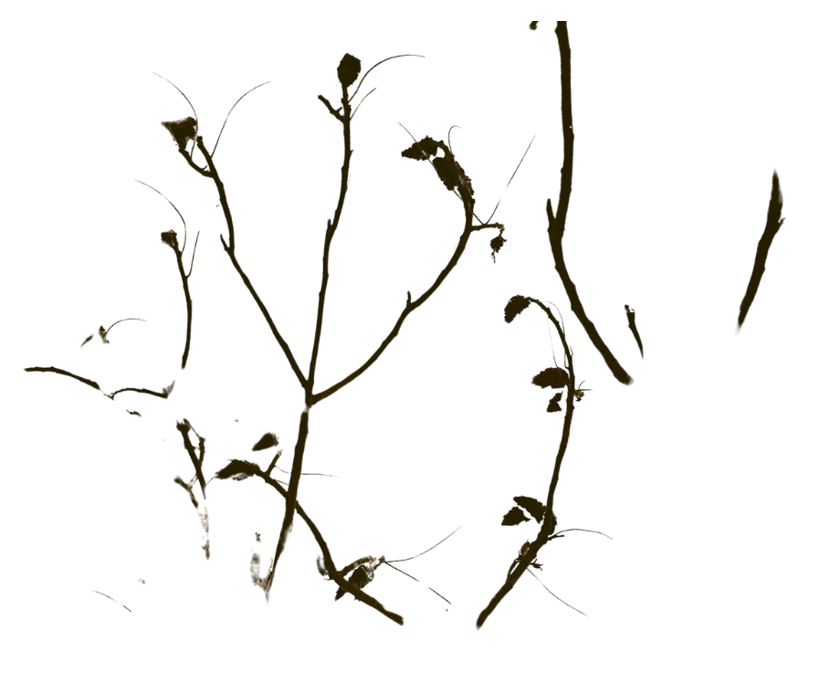
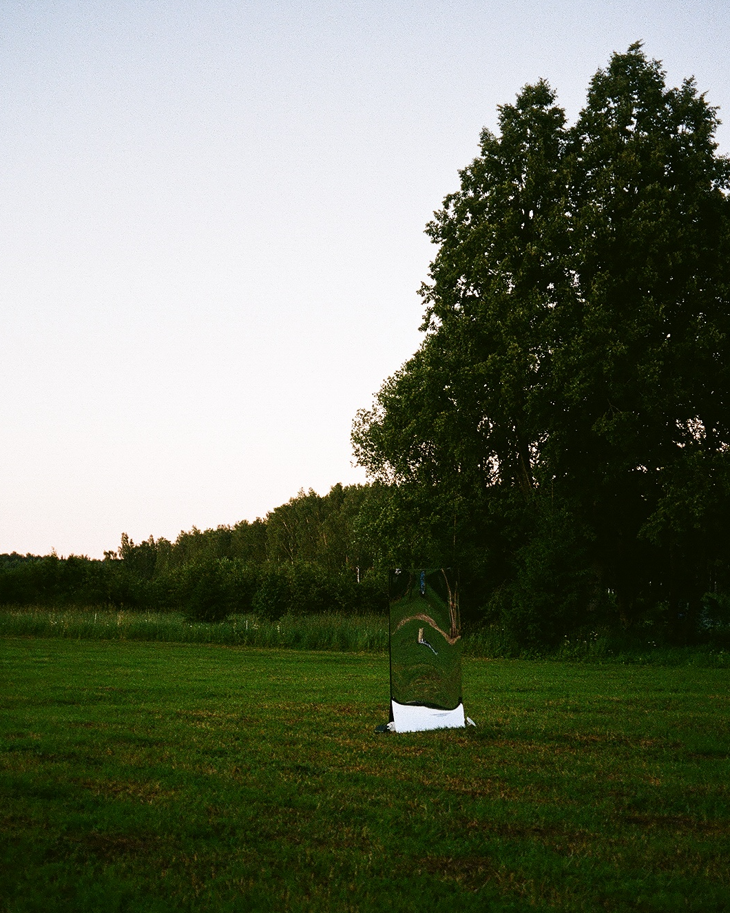
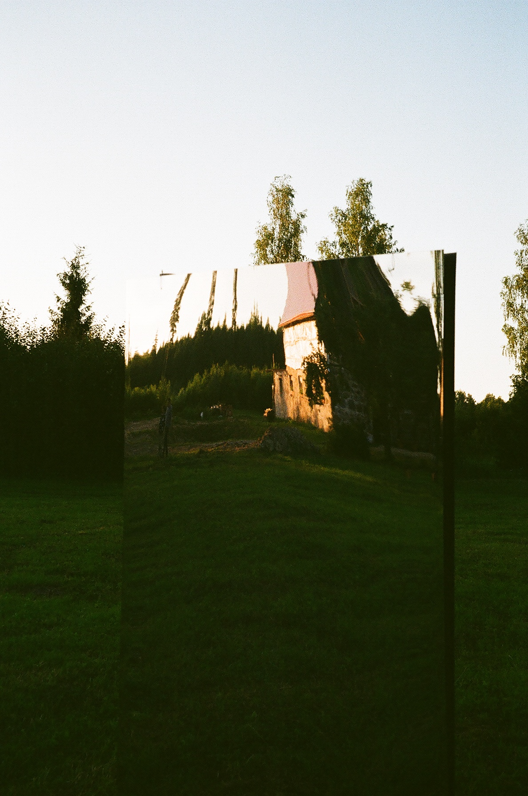
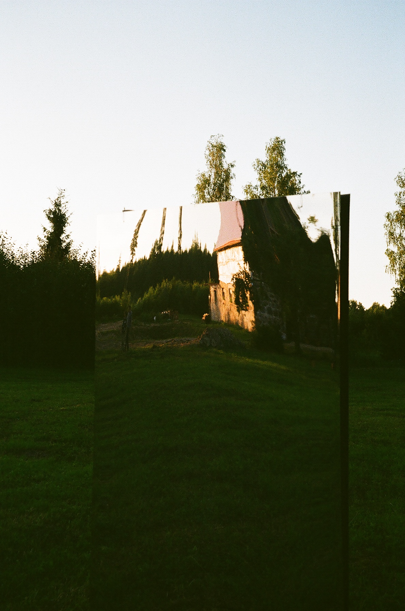

expectations, upcoming changes or the unexpected: this improvisational performance is a guide to conscious presence and self-exploration in the acoustic world. Listeners are invited into an unknown territory where noise turns into order and concentration leads to controlled chaos.
"objects" is a wider research project, unveiling during my Master's studies. It includes a variety of improvisation-based performances, that investigate connections between spatial sound and sonic triggers. This projects idea has developed in older works, represented in shorter fixed media formats. All sounds are created via creative coding in SuperCollider.
"objects" is a wider research project, unveiling during my Master's studies. It includes a variety of improvisation-based performances, that investigate connections between spatial sound and sonic triggers. This projects idea has developed in older works, represented in shorter fixed media formats. All sounds are created via creative coding in SuperCollider.
objects in mirror | installation at SoundManor360
“objects in mirror” delves into portraying intimacy and harshness of natural environments. With a mirror as a centre point, installation invites you to reflect and meditate, whilst navigating personal associations within sonic environment.
Audio-visual installation was presented in "Sound Manor 360", Ropaži parish, Latvia.

 

back to main